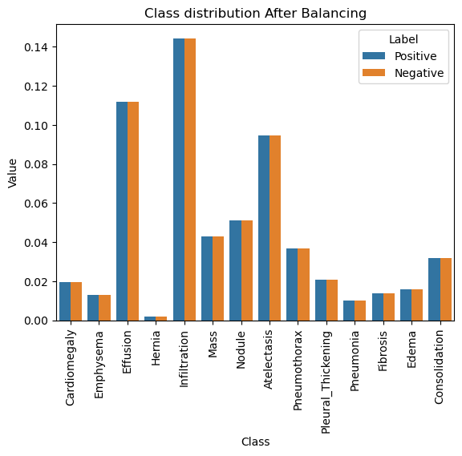
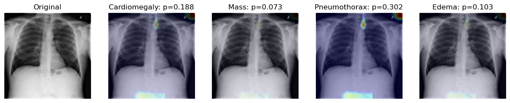
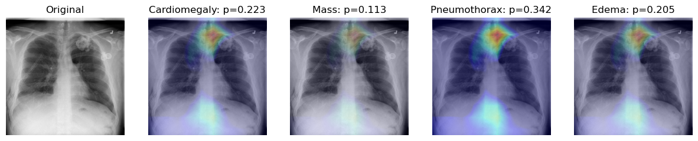

import keras
import json
import numpy as np
import pandas as pd
import matplotlib.pyplot as plt
from tensorflow.keras import backend as K
import tensorflow as tf
tf.compat.v1.logging.set_verbosity(tf.compat.v1.logging.ERROR)
import src.utils.xraypp as xraypp
import src.utils.plotter as pltter
import src.utils.batchgenerator as dg
import src.utils.models as dl_models
HOME_DIR_2D = "./data/nih/images-small/"
DATA_DIR_2D = HOME_DIR_2D
train_df = pd.read_csv("./data/nih/train-small.csv")
valid_df = pd.read_csv("./data/nih/valid-small.csv")
test_df = pd.read_csv("./data/nih/test.csv")
labels = ['Cardiomegaly',
'Emphysema',
'Effusion',
'Hernia',
'Infiltration',
'Mass',
'Nodule',
'Atelectasis',
'Pneumothorax',
'Pleural_Thickening',
'Pneumonia',
'Fibrosis',
'Edema',
'Consolidation']
xray_pp_obj = xraypp.XrayPP(
train_df=train_df,
valid_df=valid_df,
test_df=test_df,
img_dir=DATA_DIR_2D,
target_w=320,
target_h=320,
labels=labels,
)
Output from XrayPP initialization:
06/04//2024 01:21:1712389902 PM - INFO - XrayPP: Initializing the Medical Image Preprocessor Class
06/04//2024 01:21:1712389902 PM - INFO - ComputeStats: Initializing the Compute Stats Class
06/04//2024 01:21:1712389902 PM - INFO - XrayPP: Initializing the X-ray image preprocessing class
06/04//2024 01:21:1712389902 PM - INFO - XrayPP: Initializing the X-ray image preprocessing class
06/04//2024 01:21:1712389902 PM - INFO - XrayPP: Image Directory: data/nih/images-small
06/04//2024 01:21:1712389902 PM - INFO - XrayPP: Image Directory: data/nih/images-small
dg_xray = xray_pp_obj.get_generator(batch_size=32, num_channels=2)
Generator initialization output:
06/04//2024 01:21:1712389903 PM - INFO - XrayPP: Initializing the Data Generator For Training, Testing and Validation generators
Found 1000 validated image filenames.
Found 1000 validated image filenames.
Found 200 validated image filenames.
Found 420 validated image filenames.
xray_pp_obj.update_kwargs()
import numpy as np
import pandas as pd
import seaborn as sns
import matplotlib.pyplot as plt
from keras.preprocessing.image import ImageDataGenerator
from keras.applications.densenet import DenseNet121
from keras.layers import Dense, GlobalAveragePooling2D
from keras.models import Model
from keras import backend as K
from keras.models import load_model
import tensorflow as tf
tf.compat.v1.logging.set_verbosity(tf.compat.v1.logging.ERROR)
model_obj = dl_models.DLModels(
model_2d_dir='./models/nih/densenet.hdf5',
model_3d_dir='./models/pretrained_model.h5',
pre_trained_wts='./models/nih/pretrained_model.h5'
)
labels = xray_pp_obj.labels
freq_pos, freq_neg = model_obj.cs.compute_class_freqs(train_generator.labels)
pos_neg_dict = model_obj.cs.calc_pos_neg_weights(freq_pos=freq_pos, freq_neg=freq_neg)
Model initialization output:
06/04//2024 01:21:1712389910 PM - INFO - DLModels: Initializing the Deep Learning Model Class
06/04//2024 01:21:1712389910 PM - INFO - ComputeStats: Initializing the Compute Stats Class
06/04//2024 01:21:1712389910 PM - INFO - ComputeStats: Initializing the Compute Stats Class
# Create DataFrame for positive values
pos_data = pd.DataFrame({"Class": labels, "Label": "Positive", "Value": freq_pos})
# Create DataFrame for negative values
neg_data = pd.DataFrame([{"Class": labels[l], "Label": "Negative", "Value": v}
for l, v in enumerate(freq_neg)])
# Concatenate positive and negative data
data = pd.concat([pos_data, neg_data], ignore_index=True)
# Plot data
plt.xticks(rotation=90)
f = sns.barplot(x="Class", y="Value", hue="Label", data=data)
f.set_title('Class distribution Before Balancing')

# Create DataFrame for positive contributions
pos_data = pd.DataFrame({
"Class": labels,
"Label": "Positive",
"Value": pos_neg_dict['pos_contribution']
})
# Create DataFrame for negative contributions
neg_data = pd.DataFrame([{
"Class": labels[l],
"Label": "Negative",
"Value": v
} for l, v in enumerate(pos_neg_dict['neg_contribution'])])
# Concatenate positive and negative contributions
data = pd.concat([pos_data, neg_data], ignore_index=True)
# Plot data
plt.xticks(rotation=90)
g = sns.barplot(x="Class", y="Value", hue="Label", data=data)
g.set_title('Class distribution After Balancing')

The plots above demonstrate how we address class imbalance in the dataset. The first plot shows the original distribution of positive and negative cases for each condition, while the second plot shows the balanced distribution after applying our weighting strategy.
import random
random.seed(a=None, version=2)
auc_rocs = model_obj.cs.get_roc_curve(labels, predicted_vals, test_generator)
ROC Curves for Different Pathologies:

One of the challenges of using deep learning in medicine is that the complex architecture used for neural networks makes them much harder to interpret compared to traditional machine learning models. Class Activation Maps (CAM) help us understand where the model is "looking" when classifying an image.
Key points about Class Activation Maps:
We generate GradCAM visualizations for the top 4 performing classes:
# only show the labels with top 4 AUC
labels_to_show = np.take(labels, np.argsort(auc_rocs)[::-1])[:4]
model_obj.cs.compute_gradcam(model_2d,
img='00008270_015.png',
image_dir=DATA_DIR_2D,
df=train_df,
labels=labels,
selected_labels=labels_to_show,
W=320, H=320)
Output from GradCAM generation:
1/1 [==============================] - 1s 766ms/step
Loading original image
Generating gradcam for class Cardiomegaly
Generating gradcam for class Mass
Generating gradcam for class Pneumothorax
Generating gradcam for class Edema

Let's look at another example with a different X-ray image:
img_ex = '00011355_002.png'
model_obj.cs.compute_gradcam(model_2d,
img=img_ex,
image_dir=DATA_DIR_2D,
df=train_df,
labels=labels,
selected_labels=labels_to_show,
W=320, H=320)

The GradCAM visualizations demonstrate that our model is focusing on anatomically relevant regions for each pathological condition. This provides confidence that the model is learning meaningful features rather than spurious correlations in the data.